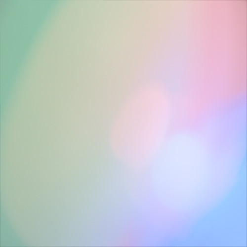

ABOUT

坂本実紅
Web制作との出会い
異業種で接客・事務・清掃などの仕事を経験する中で、「正確な実務遂行」と「状況に応じた柔軟な対応」を大切にしてきました。
当初はPC操作にも不慣れでしたが、独学でMOS Excelを取得する中で、パソコンを使ってものづくりをする楽しさに触れ、Web制作に興味を持ちました。
Web制作を始めた当初は、少しずつサイトが形になっていく過程が楽しく、コツコツと作り込むことにやりがいを感じました。
エラーを一つずつ解決しながら思い描いた形へ近づけていく過程にも面白さを感じ、完成したときの達成感が、Web制作を好きになった理由の一つです。
制作で大切にしていること
制作を続ける中で、「相手にとって分かりやすく、使いやすいものを作ること」を大切にするようになりました。
デザインの意図を理解し、情報の優先順位や使いやすさを意識しながら、一つひとつ丁寧に制作することを心掛けています。
これから目指すこと
「もっとできることを増やしたい」という思いを原動力に、新しい技術やより良い制作方法を学び続けています。
今後も、一つひとつの制作に丁寧に向き合い、技術だけでなく、お客様やユーザーにとって価値のあるWebサイトを提供できる制作者を目指しています。